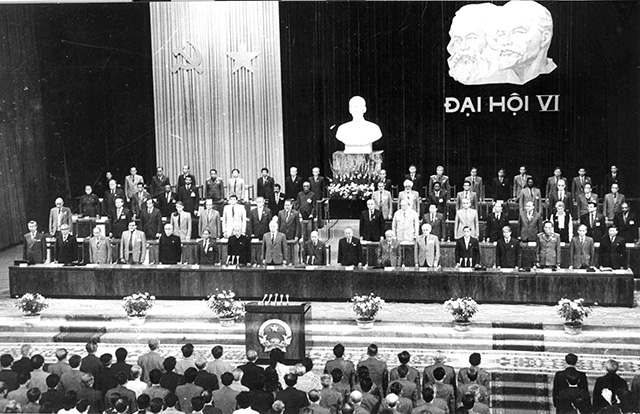

01 SỰ RA ĐỜI, PHÁT TRIỂN CỦA NỀN DÂN CHỦ XÃ HỘI CHỦ
NGHĨA Ở VIỆT NAM
🌱
1.1. Sự ra đời
Chế độ dân chủ nhân dân ở nước ta
được xác lập sau Cách mạng Tháng Tám năm 1945.
Đến năm 1976, tên nước được đổi
thành: Cộng hòa xã hội chủ nghĩa Việt Nam.
Tuy nhiên, trong các văn kiện của
Đảng thời kỳ này, hầu như chưa sử dụng cụm từ “dân chủ xã hội chủ nghĩa”, mà thường nêu quan
điểm:
“Xây dựng chế độ làm chủ tập thể xã hội chủ nghĩa”
gắn với: “Nắm vững chuyên chính vô sản”.
Trong thời kỳ này, bản chất của dân
chủ xã hội chủ nghĩa, cũng như mối quan hệ giữa dân chủ xã hội chủ nghĩa và Nhà nước pháp quyền
xã hội chủ nghĩa, chưa được xác định một cách rõ ràng.
Việc xây dựng nền dân chủ xã hội chủ
nghĩa, đặc biệt là việc thực hiện dân chủ trong thời kỳ quá độ lên chủ nghĩa xã hội ở Việt Nam
như thế nào để:
Phù hợp với đặc điểm kinh tế của xã hội Việt Nam;
Phù hợp với đặc điểm xã hội;
Phù hợp với đặc điểm văn hóa;
Phù hợp với đặc điểm đạo đức;
Gắn với việc hoàn thiện hệ thống pháp luật, kỷ cương;
cũng chưa được đặt ra một cách cụ thể,
thiết thực.
Bên cạnh đó, nhiều lĩnh vực có quan hệ mật thiết với dân chủ xã hội chủ nghĩa như: Dân
sinh, Dân trí, Dân quyền chưa được đặt đúng vị trí và giải quyết đúng mức để thúc
đẩy việc xây dựng nền dân chủ xã hội chủ nghĩa.
📈
1.2. Sự phát triển của nền dân chủ xã hội chủ nghĩa trong thời kỳ đổi mới
Đại hội VI của Đảng năm 1986 đề ra
đường lối đổi mới toàn diện đất nước.
Trong đó, Đại hội nhấn mạnh việc:
Phát huy dân chủ để tạo ra một động lực mạnh mẽ cho phát triển đất nước.
Đại hội khẳng định: Trong toàn bộ
hoạt động của mình, Đảng phải quán triệt tư tưởng “lấy dân làm gốc”, xây dựng và phát huy quyền
làm chủ của nhân dân lao động.
Đồng thời nhấn mạnh bài học: “Cách
mạng là sự nghiệp của quần chúng”.
Bài học này luôn có ý nghĩa quan
trọng.
Thực tiễn cách mạng chứng minh rằng: Ở đâu nhân dân lao động có ý thức làm chủ và được làm chủ
thật sự, thì ở đấy xuất hiện phong trào cách mạng.

💡
1.3. Nhận thức về dân chủ xã hội chủ nghĩa qua thời kỳ đổi mới
Sau 35 năm đổi mới, nhận thức về:
Dân chủ xã hội chủ nghĩa; Vị trí của dân chủ; Vai trò của dân chủ ở nước ta; đã có nhiều điểm
mới.
Qua mỗi kỳ Đại hội của Đảng trong
thời kỳ đổi mới, dân chủ ngày càng được: Nhận thức đầy đủ hơn; Phát triển hơn; Hoàn thiện đúng
đắn hơn; Phù hợp hơn với điều kiện cụ thể của nước ta.
Đảng khẳng định một trong những đặc
trưng của chủ nghĩa xã hội Việt Nam là: Do nhân dân làm chủ.
Dân chủ được đưa vào mục tiêu tổng
quát của cách mạng Việt Nam: “Dân giàu, nước mạnh, dân chủ, công bằng, văn minh.”
Đồng thời Đảng khẳng định: “Dân
chủ xã hội chủ nghĩa là bản chất của chế độ ta, vừa là mục tiêu, vừa là động lực của sự phát
triển đất nước”.
Do đó, phải:
Xây dựng nền dân chủ xã hội chủ nghĩa;
Từng bước hoàn thiện nền dân chủ xã hội chủ nghĩa;
Bảo đảm dân chủ được thực hiện trong thực tế cuộc sống;
Dân chủ được thực hiện ở mỗi cấp;
Dân chủ được thực hiện trên tất cả các lĩnh vực.
Dân chủ phải: Gắn liền với kỷ luật;
Gắn liền với kỷ cương; Được thể chế hóa bằng pháp luật; Được pháp luật bảo đảm.
02 BẢN CHẤT CỦA NỀN DÂN CHỦ XÃ HỘI CHỦ NGHĨA Ở VIỆT
NAM
Cũng như bản chất của nền dân chủ xã hội
chủ nghĩa nói chung, ở Việt Nam: Bản chất dân chủ xã hội chủ nghĩa là dựa vào Nhà nước xã hội chủ
nghĩa và sự ủng hộ, giúp đỡ của nhân dân.
Đây là nền dân chủ mà con người là thành
viên trong xã hội với: Tư cách công dân; Tư cách của người làm chủ.
Quyền làm chủ của nhân dân
Quyền làm chủ của nhân dân được thể hiện
ở quan điểm: Tất cả quyền lực đều thuộc về nhân dân.
Trong đó: Dân là gốc – dân là chủ – dân làm
chủ.
📖
2.1. Tư tưởng Hồ Chí Minh về quyền làm chủ của nhân dân
Giáo trình dẫn tư tưởng Hồ Chí Minh:
“NƯỚC TA LÀ NƯỚC DÂN CHỦ.
Bao nhiêu lợi ích đều vì dân.
Bao nhiêu quyền hạn đều của dân.
Công cuộc đổi mới, xây dựng là trách nhiệm của dân.
Sự nghiệp kháng chiến, kiến quốc là công việc của dân.
Chính quyền từ xã đến Chính phủ trung ương do dân cử ra.
Đoàn thể từ Trung ương đến xã do dân tổ chức nên.
Nói tóm lại, quyền hành và lực lượng đều ở nơi dân”.
Từ đó thể hiện rõ quan điểm:
Nhân dân là chủ thể của quyền lực và là người thực hiện quyền làm chủ.
03 NHỮNG NỘI DUNG CỦA DÂN CHỦ XÃ HỘI CHỦ NGHĨA Ở
VIỆT NAM
Kế thừa tư tưởng dân chủ
trong lịch sử và trực tiếp là tư tưởng dân chủ của Hồ Chí Minh, từ khi ra đời cho đến nay, đặc biệt
trong thời kỳ đổi mới, Đảng luôn xác định:
Xây dựng nền dân chủ xã
hội chủ nghĩa vừa là mục tiêu, vừa là động lực phát triển xã hội, là bản chất của chế độ xã hội chủ
nghĩa.
Đồng thời: Dân chủ gắn
liền với kỷ cương và phải thể chế hóa bằng pháp luật, được pháp luật bảo đảm.
Nội dung này được hiểu qua
các phương diện sau:
3.1. Dân chủ là mục tiêu của chế độ xã hội chủ nghĩa
Mục tiêu được thể hiện là: Dân giàu, nước mạnh, dân chủ,
công bằng, văn minh.
3.2. Dân chủ là bản chất của chế độ xã hội chủ nghĩa
Dân chủ thể hiện ở: Do nhân dân làm chủ, quyền lực thuộc về
nhân dân.
3.3. Dân chủ là động lực để xây dựng chủ nghĩa xã hội
Dân chủ tạo động lực thông qua: Phát huy sức mạnh của nhân
dân, của toàn dân tộc.
3.4. Dân chủ gắn với pháp luật
Dân chủ: Phải đi đôi với kỷ luật; Phải đi đôi với kỷ cương;
Phải được thể chế hóa bằng pháp luật; Được pháp luật bảo đảm.
3.5. Dân chủ phải được thực hiện trong đời sống thực tiễn
Dân chủ phải được thực hiện: Ở tất
cả các cấp; Trên mọi lĩnh vực của đời sống xã hội.
Các lĩnh vực được giáo trình nêu gồm: Kinh tế,
Chính trị, Văn hóa, Xã hội.
04 CÁC HÌNH THỨC THỰC HIỆN DÂN CHỦ XÃ HỘI CHỦ NGHĨA
Ở VIỆT NAM
Bản chất dân chủ xã hội chủ nghĩa ở Việt Nam
được thực hiện thông qua: Hai hình thức: 1. Dân chủ gián tiếp. 2. Dân chủ trực tiếp.
🏛️
4.1. Dân chủ gián tiếp
Dân chủ gián tiếp là: Hình thức dân chủ
đại diện.
Hình thức này được thực hiện khi nhân
dân: “Ủy quyền”; Giao quyền lực của mình cho những tổ chức mà nhân dân trực tiếp bầu ra.
Những con người và tổ chức được nhân dân
bầu ra: Đại diện cho nhân dân; Thực hiện quyền làm chủ cho nhân dân.
Quốc hội
Nhân dân bầu ra Quốc hội.
Quốc hội là: Cơ quan quyền lực
nhà nước cao nhất.
Quốc hội hoạt động theo: Nhiệm kỳ
5 năm.
Quyền lực nhà nước
Quyền lực nhà nước ở Việt Nam:
Là thống nhất; Có sự phân công; Có sự phối hợp; Có sự kiểm soát giữa các cơ quan nhà nước.
Việc này được thực hiện trong
quá trình thực hiện các quyền: Lập pháp, Hành pháp, Tư pháp.
05 DÂN CHỦ TRỰC TIẾP
🙋♂️
Dân chủ trực tiếp là:
Hình thức thông qua đó, nhân dân bằng hành động trực tiếp của mình thực hiện quyền làm chủ Nhà nước
và xã hội.
Hình thức này thể
hiện thông qua các quyền của nhân dân.
Nhân dân có quyền:
Được thông tin
→ Được thông tin về hoạt động của Nhà nước.
Được bàn bạc
→ Được bàn bạc về công việc của Nhà nước và cộng đồng
dân cư.
Được bàn về các quyết định dân chủ ở
cơ sở
→ Nhân dân được tham gia bàn đến những quyết định về
dân chủ cơ sở.
Được kiểm tra, giám sát
→ Nhân dân kiểm tra, giám sát hoạt động của các cơ quan
nhà nước từ Trung ương cho đến cơ sở.
Dân chủ ngày càng được thể hiện: Trong tất cả các mối quan hệ xã hội; Trở thành quy chế; Trở thành
cách thức làm việc của mọi tổ chức trong xã hội.
06 ĐIỀU KIỆN BẢO ĐẢM QUYỀN LÀM CHỦ CỦA NHÂN
DÂN
Trong quá trình xây dựng chủ nghĩa xã hội ở
nước ta, một yêu cầu tất yếu là: Không ngừng củng cố, hoàn thiện những điều kiện đảm bảo quyền làm chủ
của nhân dân và chăm lo đời sống vật chất, tinh thần của nhân dân.
6.1. Bảo đảm và phát huy quyền làm chủ
Thực tiễn xây dựng đất nước cho thấy
dân chủ xã hội chủ nghĩa được thể hiện ở: Bảo đảm quyền làm chủ của nhân dân; Phát huy quyền làm
chủ của nhân dân.
Quyền làm chủ được phát triển theo hướng: Ngày càng mở
rộng; Hoạt động ngày càng có hiệu quả.
6.2. Nâng cao ý thức làm chủ và trách nhiệm công dân
Trong xã hội: Ý thức làm chủ của
nhân dân ngày càng được đề cao; Trách nhiệm công dân của người dân ngày càng được đề cao.
Những điều này được thể hiện: Trong pháp luật; Trong cuộc
sống.
6.3. Quyền tham gia quản lý xã hội
Mọi công dân đều có quyền: Tham gia
quản lý xã hội bằng nhiều cách khác nhau.
Việc tham gia phụ thuộc vào: Trách nhiệm; Nghĩa vụ của mỗi
người.
6.4. Dân chủ công dân gắn với kỷ cương
Dân chủ công dân: Gắn liền với kỷ cương của đất nước; Được
thể chế hóa bằng luật của Nhà nước pháp quyền; Được thể hiện trong các nguyên tắc hoạt động của
các cơ quan, tổ chức.
07 PHƯƠNG CHÂM THỰC HIỆN DÂN CHỦ
🗣️
Các quy chế dân chủ: Từ
cơ sở đến Trung ương; Trong các tổ chức chính trị – xã hội; đều thực hiện phương châm:
“Dân biết, dân bàn, dân làm,
dân kiểm tra”
Đây là phương châm được giáo trình sử dụng
để thể hiện việc thực hiện quyền làm chủ của nhân dân.
7.1. Đường lối, chính sách của Đảng và pháp luật của Nhà nước
Đảng khẳng định:
“Mọi đường lối,
chính sách của Đảng và pháp luật của Nhà nước đều vì lợi ích của nhân dân, có sự tham gia ý kiến
của nhân dân”.
Điều này thể hiện sự tham gia của nhân dân vào quá trình
xây dựng và thực hiện đường lối, chính sách và pháp luật.
08 NHỮNG KHÓ KHĂN TRONG XÂY DỰNG NỀN DÂN CHỦ XÃ HỘI
CHỦ NGHĨA Ở VIỆT NAM
Việc xây dựng dân chủ xã hội chủ nghĩa ở Việt
Nam diễn ra trong những điều kiện nhất định.
8.1. Điều kiện xuất phát về kinh tế
Việt Nam xuất phát từ: Một nền kinh tế kém phát triển.
8.2. Hậu quả chiến tranh
Đất nước: Chịu hậu quả chiến tranh tàn phá nặng nề.
8.3. Những tiêu cực trong đời sống xã hội
Bên cạnh đó: Những tiêu cực trong
đời sống xã hội chưa được khắc phục triệt để.
Những vấn đề này: Làm ảnh hưởng đến bản chất tốt đẹp của
chế độ dân chủ nước ta; Làm suy giảm động lực phát triển của đất nước.
8.4. Những trở ngại khác
Bên cạnh những khó khăn trên còn có:
Âm mưu “diễn biến hòa bình”; Gây bạo loạn, lật đổ; Sử dụng chiêu bài “dân chủ”, “nhân quyền” của
các thế lực thù địch; Vấn đề “tự diễn biến”, “tự chuyển hóa”.
Những vấn đề này: Nảy sinh và diễn biến hết sức phức tạp.
Và đang là: Trở ngại đối với quá trình thực hiện dân chủ ở nước ta trong giai đoạn hiện nay.
09 BẢN CHẤT TỐT ĐẸP VÀ TÍNH ƯU VIỆT CỦA NỀN DÂN CHỦ
XÃ HỘI CHỦ NGHĨA Ở VIỆT NAM
Thực tiễn cho thấy: Bản chất tốt đẹp và tính ưu việt của nền dân chủ xã hội chủ nghĩa ở Việt Nam
càng ngày càng thể hiện giá trị lấy dân làm gốc.
Kể từ khi: Nước Việt Nam Dân chủ Cộng hòa được khai sinh cho đến nay:
Nhân dân thực sự trở thành người làm chủ.
Nhân dân: Tự xây dựng; Tổ chức; Quản lý xã hội.
Đây là chế độ bảo đảm quyền làm chủ trong đời sống của nhân dân trên các lĩnh vực: Chính trị, Kinh
tế, Văn hóa, Xã hội.
Đồng thời, nền dân chủ xã hội chủ nghĩa: Phát huy tính tích cực, sáng tạo của nhân dân trong sự
nghiệp: Xây dựng và bảo vệ Tổ quốc xã hội chủ nghĩa.
🎮 Mini Game Ô Chữ
Thử tài kiến thức về Dân chủ XHCN: Nhấn
vào số thứ tự để xem câu hỏi và điền đáp án!